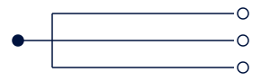
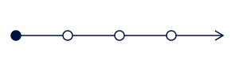

Возможных направлений несколько
Продукт подходит разным компаниям, но времени и бюджета на все варианты нет.
Сравним предметную реакцию покупателей и покажем, куда есть основания двигаться.
Идей несколько, а найм и маркетинг требуют конкретной задачи. MVP RUN готовит и выполняет проверку вашей коммерческой гипотезы перед вложениями в масштабирование.
Обсудить мою гипотезуГотовая формулировка не нужна. Можно начать с идеи и вопросов.
Продукт подходит разным компаниям, но времени и бюджета на все варианты нет.
Сравним предметную реакцию покупателей и покажем, куда есть основания двигаться.
Покупатели не откликаются или останавливаются на пути к покупке. Причина пока неясна.
Выясним препятствия в переговорах, доработаем предложение и проверим изменения.
Проверку выполняет команда MVP RUN. Основателю не нужно отдельно собирать исследователя, исполнителя аутрича и человека для переговоров.
Разбираемся в продукте и доступном опыте продаж. Определяем покупателей и аргументы для первого разговора. Готовим текст, структуру и визуальную подачу материалов.
Находим компании и адресатов, обращаемся к ним. При интересе выясняем условия покупки и продвигаем разговор к следующему шагу.
По повторяющимся наблюдениям уточняем аудиторию, предложение или материалы и смотрим, меняется ли реакция.
Реакция покупателей помогает уточнить предложение
Оцениваем не только ответы и встречи, но и то, какие действия покупатель готов совершить дальше.
Передаём, с кем и с чем выходили, что произошло в переговорах, какие изменения внесли и что показала повторная проверка.
Целевые компании, ситуации покупки, предложение и аргументы.
Сообщения и материалы, которые использовали в обращениях и разговорах.
Контакты, ответы, причины отказов и начатые договорённости.
Инструкция продавцу: кому обращаться, что говорить и какой следующий шаг предлагать.
Если интереса недостаточно, покажем повторяющиеся препятствия и чего ещё не хватает для решения. Не будем выдавать ответы на письма за подтверждённые покупки.
Ответственный за проект ведёт гипотезу, предложение и ключевые переговоры. Специалист по поиску клиентов собирает компании и выполняет обращения. Технический специалист настраивает инструменты.

Подготовим и проверим до трёх гипотез одного продукта. Сравним предметную реакцию и продвижение к покупке.
На выходе — результаты сравнения и основа для работы по перспективному направлению, если фактов достаточно.

Уточним условия покупки, проведём обращения и возникшие переговоры. Доработаем предложение и проверим изменения.
На выходе — достигнутая глубина проверки, материалы и состояние переговоров для продолжения.
Можно сразу начать с глубокой проверки. Объём компаний и границы переговоров согласуем под задачу и рынок.
250 тыс. ₽
До трёх гипотез одного продукта · около месяца
Стандартная команда и инфраструктура включены. Точную стоимость и состав проекта подтвердим до договора.
Условия глубокой проверки обсудим применительно к вашей задаче.
Рассказать о продукте и передать имеющиеся материалы и историю продаж. Согласования и участие в переговорах определим под задачу проекта. Готовая база или заранее составленная гипотеза для первого обращения не нужны.
В быстром формате продвигаем возникший интерес к ближайшему коммерческому шагу. В глубоком подробнее проходим условия и препятствия покупки. Работа ограничена сроком и ресурсом проекта. Передаём историю обсуждений, договорённости и следующие действия.
Подготовленные материалы, полученные наблюдения и результаты доработок. Покажем основания повторяющихся препятствий. Если данных мало, обозначим, чего не удалось выяснить. Молчание нескольких компаний само по себе не доказывает отсутствие спроса.
Обязательство MVP RUN — выполнить согласованный план коммерческой работы и зафиксировать результаты. Решение о покупке принимает покупатель, поэтому число сделок не гарантируем. Ответ, коммерческий следующий шаг и оплата дают разную степень подтверждения.
Демонстрационный пример формы результата, не клиентский кейс.
Продавец видит, что важно покупателю и о чём договорились. Подключение специалиста показывает продвижение, но ещё не подтверждает готовность оплатить продукт.
Обсудим продукт, предполагаемых покупателей и прошлые попытки продаж. Определим, какие факты уже есть и какой формат работы подходит вашей задаче.
Обсудить мою гипотезуОткроется Telegram · @SergeySolodyankin